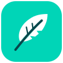

Белешке при руци
Пиши и без интернета. Претражуј, сортирај, премештај и спајај белешке. Додај више фајлова, фотографија и постојећих аудио снимака.

СвескаНикол*АИ* / Nikol*AI*
Запиши идеју, сачувај слику, додај фајл. Организуј све у бележнице и секције, па настави тамо где си стао.
Свеска · латинични назив Sveska
Пиши и без интернета. Претражуј, сортирај, премештај и спајај белешке. Додај више фајлова, фотографија и постојећих аудио снимака.
Повежи Google Drive по жељи. Сваки профил има одвојене бележнице. За рад на телефону и рачунару користи исти налог и компатибилну Свеску.
Android издање чита локалне OneNote .one/.onepkg датотеке. Потпуна .sveska копија чува белешке и прилоге за пренос и резерву.
За локални рад није потребан налог Свеске. Када укључиш Google синхронизацију, садржај се преноси у изабрани Google Drive налог. Апликација не користи огласе или уграђену аналитику.